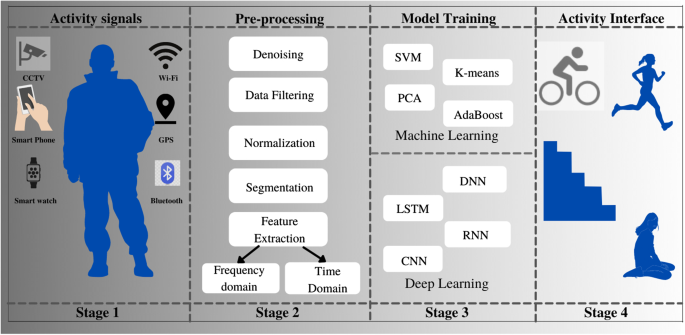
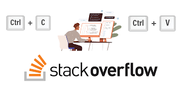
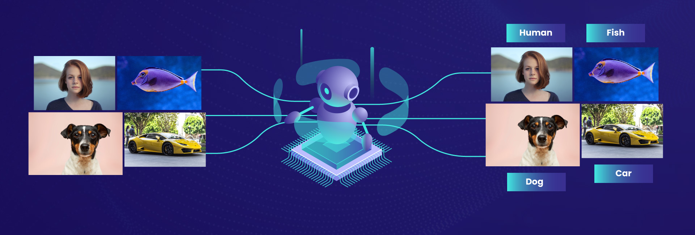

Pneumothorax is usually diagnosed by a radiologist on a chest x-ray, and can sometimes be very difficult to confirm.
An accurate AI algorithm to detect pneumothorax would be useful in a lot of clinical scenarios
AI could be used to triage chest radiographs for priority interpretation,
or to provide a more confident diagnosis for non-radiologists..
This project implements a music generation system using Recurrent Neural Networks (RNNs). RNNs are a powerful type of neural network that excel at handling sequential data, making them ideal for tasks like music generation.

In this project we are trying to predict certain activities performed by few subject(19-48 years of age) and we have gathered the information from the accelerometer and gyroscope sensors from a smartwatch(samsung galaxy watch 2).

This repository contains code for predicting Stack Overflow tags using machine learning techniques. The goal is to accurately assign relevant tags to questions based on their content.

To develop and implement an image classification model capable of accurately categorizing images into predefined classes. The model will leverage advanced image processing techniques and deep learning architectures to extract meaningful features and classify images.

The goal of this project is to extract valuable insights from e-commerce store data to optimize business operations, enhance customer experience, and drive sales growth.

An HR Analytics Dashboard is a centralized, interactive platform that provides a visual representation of key human resources metrics and trends. It empowers HR professionals and business leaders to make data-driven decisions by offering a comprehensive overview of workforce performance, employee engagement, talent acquisition, and overall organizational health.